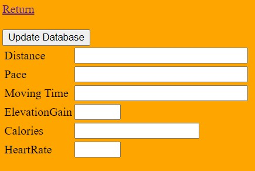
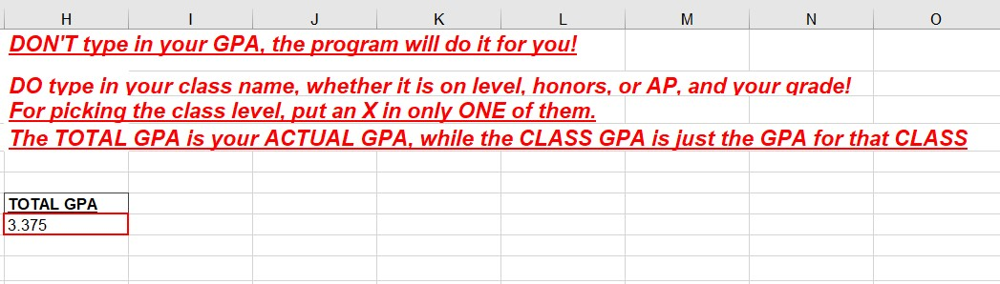

Stock Web Scraper

For this project, I created a python script that would act as a stock scraper, collecting data from a finance stock
screener and displaying that data on any given category in real time. The categories include top
gainers/losers, most volatile and/or high volume stocks, etc. The data is then translated then
displayed either in the execution terminal or an excel spreadsheet that allows for updates.
Click this for the GitHub repository: Stock Scraper
Run-Tracker Website

For this project I first created a database that itself contained two seperate tables, one to represent users and the other to track runs uploaded by users. I then created an HTML homepage that connected the database to my website and allowed for both the creation and deletion of data in each table through php code. Finally, I decorated each page and created additional code to connect each page in order for the project to be presentable. I also created HTML tables that display the database information. I was inspired by the running app Strava and wanted to attempt creating a rough outline of it on my own. Viewing the site itself would help to better understand the scope of the project.
Click this for the link to the website: Run-Tracker Website
Weighted/Unweighted GPA Calculator


One of my simpler high school projects saw me utilizing Excel spreadsheet functions in order to create a GPA
calculator. It's fairly straight forward with output being given once the user has input grade values
for the classes they entered. A second iteration took class weights into account. I also lost this code
due to an error in data transfer.